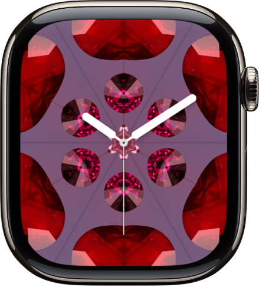

选择一张照片以创建表盘，包含形状和颜色不断变幻的图案。轻点表盘，然后旋转数码表冠以更改图案。
下方的文件数包括本地化资源。固件名称键能确认包的归属；组件的圆屏点击边界、亮屏过渡与 AOD 对照均待设备验证。
原始包 已解析属性表 Mach-O 方法与成员 ARM64 汇编 解出的纹理和场景
.art × 69 .strings × 40 .pathfinder × 33 .metallib × 2 .plist × 1 无扩展名 × 1
原始包 已解析属性表 Mach-O 方法与成员 ARM64 汇编 解出的纹理和场景
.art × 69 .strings × 40 .pathfinder × 33 .metallib × 2 .plist × 1 无扩展名 × 1
原始包 已解析属性表 Mach-O 方法与成员 ARM64 汇编 解出的纹理和场景
.art × 67 .strings × 40 .pathfinder × 33 .metallib × 2 .plist × 1 无扩展名 × 1
KaleidoscopeFaceBundle.bundleFACE_STYLE_23_DESCRIPTIONEDIT_OPTION_LABEL_KALEIDOSCOPE_ASSET_CUSTOMEDIT_OPTION_LABEL_KALEIDOSCOPE_ASSET_2_5_0EDIT_OPTION_LABEL_KALEIDOSCOPE_ASSET_25_5_0EDIT_OPTION_LABEL_KALEIDOSCOPE_STYLE_RADIALEDIT_OPTION_LABEL_KALEIDOSCOPE_ASSET_14_5_0EDIT_OPTION_LABEL_KALEIDOSCOPE_ASSET_30_5_0EDIT_OPTION_LABEL_KALEIDOSCOPE_STYLE_FSFACETEDIT_OPTION_LABEL_KALEIDOSCOPE_ASSET_7_5_0EDIT_OPTION_LABEL_KALEIDOSCOPE_ASSET_8EDIT_OPTION_LABEL_KALEIDOSCOPE_STYLE_LIMITEDIT_OPTION_LABEL_KALEIDOSCOPE_ASSET_26_5_0EDIT_OPTION_LABEL_KALEIDOSCOPE_ASSET_7EDIT_OPTION_LABEL_KALEIDOSCOPE_ASSET_15_5_0EDIT_MODE_LABEL_STYLEEDIT_OPTION_LABEL_KALEIDOSCOPE_ASSET_4_5_0EDIT_OPTION_LABEL_KALEIDOSCOPE_ASSET_20_5_0EDIT_OPTION_LABEL_KALEIDOSCOPE_ASSET_31_5_0EDIT_OPTION_LABEL_KALEIDOSCOPE_ASSET_6EDIT_OPTION_LABEL_KALEIDOSCOPE_ASSET_27_5_0EDIT_OPTION_LABEL_KALEIDOSCOPE_ASSET_9_5_0EDIT_OPTION_LABEL_KALEIDOSCOPE_ASSET_16_5_0EDIT_OPTION_LABEL_KALEIDOSCOPE_ASSET_5EDIT_OPTION_LABEL_KALEIDOSCOPE_ASSET_1_5_0EDIT_OPTION_LABEL_KALEIDOSCOPE_ASSET_21_5_0EDIT_OPTION_LABEL_KALEIDOSCOPE_ASSET_32_5_0EDIT_OPTION_LABEL_KALEIDOSCOPE_ASSET_10_5_0EDIT_OPTION_LABEL_KALEIDOSCOPE_ASSET_4EDIT_OPTION_LABEL_KALEIDOSCOPE_ASSET_6_5_0EDIT_OPTION_LABEL_KALEIDOSCOPE_ASSET_28_5_0EDIT_OPTION_LABEL_KALEIDOSCOPE_ASSET_17_5_0EDIT_OPTION_LABEL_KALEIDOSCOPE_ASSET_33_5_0EDIT_OPTION_LABEL_KALEIDOSCOPE_ASSET_3EDIT_OPTION_LABEL_KALEIDOSCOPE_ASSET_22_5_0EDIT_OPTION_LABEL_KALEIDOSCOPE_ASSET_11_5_0EDIT_OPTION_LABEL_KALEIDOSCOPE_ASSET_3_5_0EDIT_OPTION_LABEL_KALEIDOSCOPE_ASSET_2EDIT_OPTION_LABEL_KALEIDOSCOPE_ASSET_29_5_0EDIT_OPTION_LABEL_KALEIDOSCOPE_ASSET_18_5_0EDIT_OPTION_LABEL_KALEIDOSCOPE_ASSET_1EDIT_OPTION_LABEL_KALEIDOSCOPE_ASSET_23_5_0EDIT_MODE_LABEL_IMAGEEDIT_OPTION_LABEL_KALEIDOSCOPE_ASSET_8_5_0EDIT_OPTION_LABEL_KALEIDOSCOPE_ASSET_12_5_0EDIT_OPTION_LABEL_KALEIDOSCOPE_STYLE_FACETEDEDIT_OPTION_LABEL_KALEIDOSCOPE_ASSET_19_5_0EDIT_OPTION_LABEL_KALEIDOSCOPE_ASSET_5_5_0EDIT_OPTION_LABEL_KALEIDOSCOPE_ASSET_24_5_0EDIT_OPTION_LABEL_KALEIDOSCOPE_ASSET_13_5_0色组与设备条件 共享色组与默认值
-[NTKKaleidoscopeFaceView tritium_didTransitionToTritiumOn];-[NTKKaleidoscopeFaceView tritium_didTransitionToTritiumOff];-[NTKKaleidoscopeFaceView tritium_usesWidgetTransitionPresetColors];-[NTKKaleidoscopeFaceView tritium_createFaceAnimator];-[NTKKaleidoscopeFaceView tritium_alwaysOnTimelines];-[NTKKaleidoscopeFaceView tritium_transitionToFrameSpecifier:];-[NTKKaleidoscopeFaceView _prepareWristRaiseAnimation];-[NTKKaleidoscopeFaceView _performWristRaiseAnimation];-[NTKKaleidoscopeFaceView _tritium_updateComplicationColors];-[NTKKaleidoscopeFaceView tritium_willTransitionToTritiumOnToFrameSpecifier:];-[NTKKaleidoscopeFaceView tritium_willTransitionToTritiumOffFromFrameSpecifier:];-[NTKKaleidoscopeTritiumFrameSpecifier description];-[NTKKaleidoscopeTritiumFrameSpecifier initWithTimelineIdentifier:presentationTime:fromDate:toDate:faceView:];-[NTKKaleidoscopeTritiumFrameSpecifier dimming];-[NTKKaleidoscopeTritiumFrameSpecifier finalizeWithDimmingValue:overrideQuadDisplayTime:];-[NTKKaleidoscopeTritiumFrameSpecifier overrideQuadDisplayTime];-[NTKKaleidoscopeFaceView tritium_didTransitionToTritiumOn];-[NTKKaleidoscopeFaceView tritium_didTransitionToTritiumOff];-[NTKKaleidoscopeFaceView tritium_usesWidgetTransitionPresetColors];-[NTKKaleidoscopeFaceView _applyTransitionFraction:fromOption:toOption:forCustomEditMode:slot:];-[NTKKaleidoscopeFaceView tritium_createFaceAnimator];-[NTKKaleidoscopeFaceView tritium_alwaysOnTimelines];-[NTKKaleidoscopeFaceView tritium_transitionToFrameSpecifier:];-[NTKKaleidoscopeFaceView _cleanupAfterTransitionComplicationSlot:selectedComplication:];-[NTKKaleidoscopeFaceView _prepareWristRaiseAnimation];-[NTKKaleidoscopeFaceView screenWillTurnOnAnimated:];-[NTKKaleidoscopeFaceView _performWristRaiseAnimation];-[NTKKaleidoscopeFaceView _configureForTransitionFraction:fromEditMode:toEditMode:];-[NTKKaleidoscopeFaceView tritium_willTransitionToTritiumOnToFrameSpecifier:];-[NTKKaleidoscopeFaceView screenDidTurnOffAnimated:];-[NTKKaleidoscopeFaceView tritium_willTransitionToTritiumOffFromFrameSpecifier:];-[NTKKaleidoscopeFaceView _tapToInteractiveModeAnimationDidEnd];-[NTKKaleidoscopeFaceView _tapToInteractiveModeAnimationWillBegin];-[NTKKaleidoscopeFaceView _animateToCurrentDateFromDate:];-[NTKKaleidoscopeFaceView _updateDayDuration];-[NTKKaleidoscopeFaceView _updateDayDurationOnNextRunloopTurn];-[NTKKaleidoscopeQuad secondaryTexture];-[NTKKaleidoscopeQuad setSecondaryTexture:];-[NTKKaleidoscopeTritiumFrameSpecifier initWithTimelineIdentifier:presentationTime:fromDate:toDate:faceView:];+[NTKKaleidoscopeFace _faceClassOfFaceWithRichComplicationSlotsForDevice:];+[NTKKaleidoscopeFace _complicationSlotDescriptors];+[NTKKaleidoscopeFace _orderedComplicationSlots];-[NTKKaleidoscopeFace editOptionThatHidesAllComplications];-[NTKKaleidoscopeFace _numberOfOptionsForCustomEditMode:slot:];-[NTKKaleidoscopeFace _defaultOptionForCustomEditMode:slot:];-[NTKKaleidoscopeFace _indexOfOption:forCustomEditMode:slot:];-[NTKKaleidoscopeFace _optionAtIndex:forCustomEditMode:slot:];-[NTKKaleidoscopeFace _complicationsNotAvailableForThisNounString];-[NTKKaleidoscopeFaceView _complicationAlphaForEditMode:];-[NTKKaleidoscopeFaceView tritium_usesWidgetTransitionPresetColors];-[NTKKaleidoscopeFaceView _applyTransitionFraction:fromOption:toOption:forCustomEditMode:slot:];-[NTKKaleidoscopeFaceView _layoutStyleForSlot:];-[NTKKaleidoscopeFaceView _applyOption:forCustomEditMode:slot:];-[NTKKaleidoscopeFaceView _prepareForEditing];-[NTKKaleidoscopeFaceView _cleanupAfterEditing];-[NTKKaleidoscopeFaceView _keylineViewForCustomEditMode:slot:];-[NTKKaleidoscopeFaceView _curvedComplicationCircleRadius:centerAngle:maxAngularWidth:circleCenter:interior:forSlot:];-[NTKKaleidoscopeFaceView _hideTimeAndComplicationsInHomeScreen];-[NTKKaleidoscopeFaceView _keylineStyleForComplicationSlot:];-[NTKKaleidoscopeFaceView _cleanupAfterTransitionComplicationSlot:selectedComplication:];-[NTKKaleidoscopeFaceView _relativeKeylineFrameForCustomEditMode:slot:];-[NTKKaleidoscopeFaceView layoutConfigurationForSlot:];-[NTKKaleidoscopeFaceView _tritium_updateComplicationColors];-[NTKKaleidoscopeFaceView _updateComplicationColors];-[NTKKaleidoscopeFaceView textLayoutStyleForSlot:];-[NTKKaleidoscopeFaceView _applyRubberBandingFraction:forCustomEditMode:slot:];-[NTKKaleidoscopeFaceView _complicationPickerStyleForSlot:];-[NTKKaleidoscopeFaceView _newComplicationFactoryForDevice:];+[NTKKaleidoscopeFacesGalleryCollection complicationTypesBySlot];+[NTKKaleidoscopeFacesGalleryCollection spring2020ComplicationTypesBySlot];-[NTKKaleidoscopePhotoAnalysis isColoredText];+[NTKKaleidoscopeRichFace _complicationSlotDescriptors];+[NTKKaleidoscopeRichFace _richComplicationSlotsForDevice:];-[NTKKaleidoscopeRichFaceView _updateComplicationColors];-[NTKKaleidoscopeRichFaceView _keylineFrameForComplicationSlot:selected:];-[NTKKaleidoscopeRichFaceView _newComplicationFactoryForDevice:];